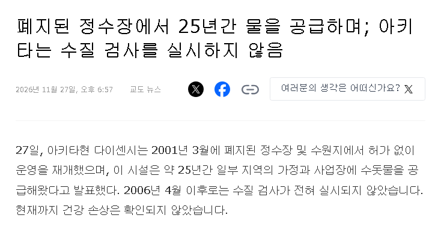

https://news.livedoor.com/article/detail/32919505/
일본 아키타현의 어느 산골 마을의 인구가 줄어들자
수익이 안 난다는 이유로 마을의 정수장이 폐기됐다.
그런데 이걸 제대로 통지를 하지 않았기에
마을 주민들은 정수장이 폐기된 건 몰랐다.
왜냐면 정수장이 폐기됐음에도
누군가 정수장에서 염소 처리라던가
수질 관리를 하면서 물을 계속 공급했으니까.
고지서까지 발부됐기에 주민들은 25년간
별 생각 없이 수도 요금까지 냈다는 모양.
나폴리탄 괴담 하나 뚝딱 나올 소재네.

정수장 직원이 짤린지도 몰랐던거임